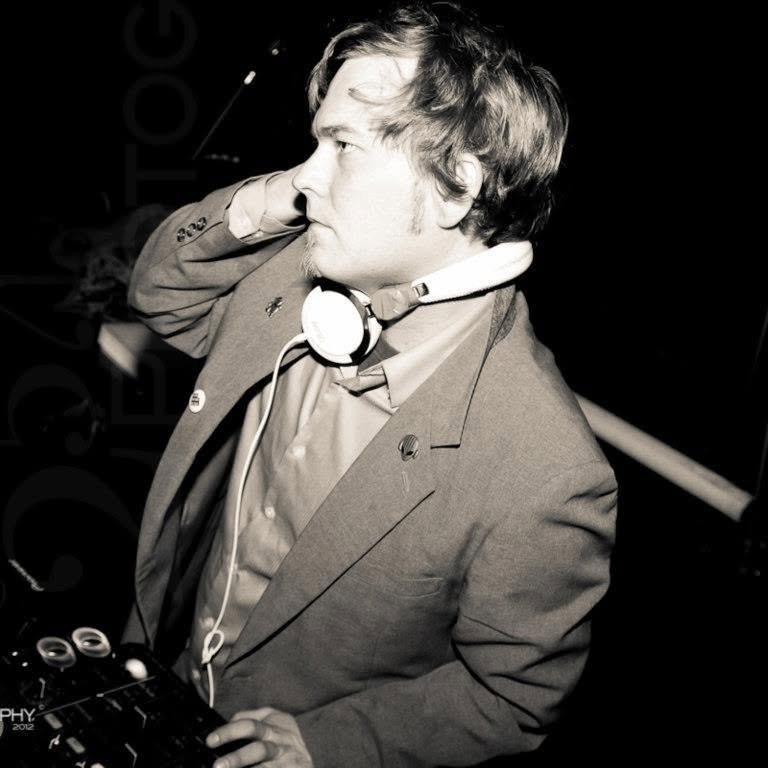
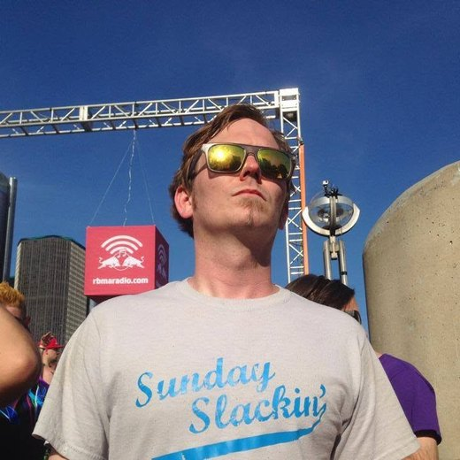
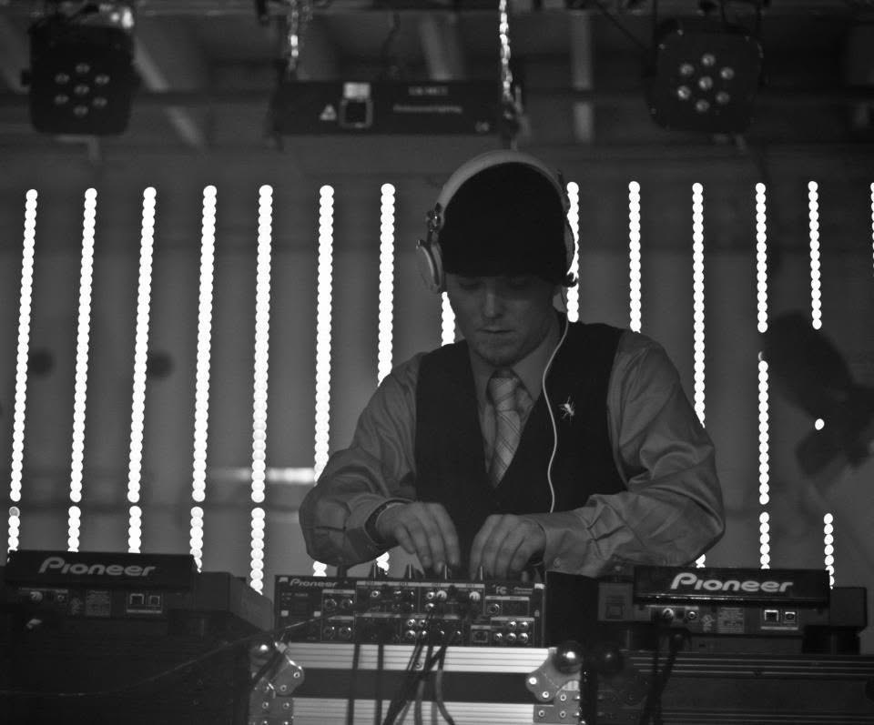
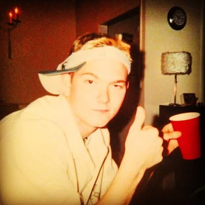
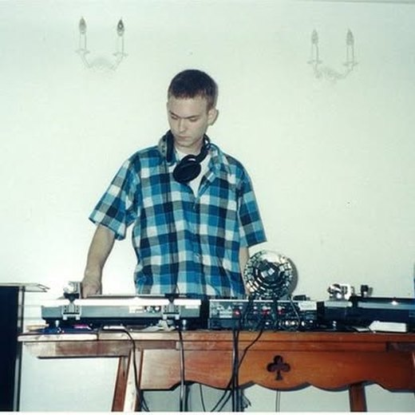

Unkle Funk
The Return · Deep · Funky · Underground
75 DEEP
Deep, funky house from a Midwestern mailman finishing 75 tracks.
75 DEEP · …/75
01 — The Mission
75 Deep.
25 years of house music trapped in 75 unfinished tracks. A mail route that eats 15 hours a day. So I built my own tools to finish them all — and I'm doing it in public.
The tools don't write the music. Every note, chord, and groove is still built by hand. They clear the admin — the repetitive Ableton overhead that labels hire assistants for. I don't have that budget, so I built my own. The hours I do have go into the only part that matters: turning a lifetime of feeling into records that still hit after the lights come up.

Every track gets finished and released — on a label I'd be proud to call home, or self-released if that's the path. This isn't a play for clicks. I'm not chasing anything other than the groove that's been in my head all these years.
This isn't a comeback story. It's a finishing story. If you've ever left something that is a big part of who you are unfinished — not abandoned, just hanging there, nagging at you — then this story is yours too.

02 — The Music
Nothing's finished. Everything's moving.
Works in progress. Tell me what one needs — you might be why it finishes next. Full catalog on SoundCloud and Beatport.
-
Work in progress · Track A
Feel Like Dancin'
0:00What does this one need to cross the line?
-
Work in progress · Track B
Untitled — vocal or no vocal?
0:00Vocal, or leave it instrumental?
-
Work in progress · Track C
Untitled — needs a hook
0:00What's the hook here?
-
Work in progress · Track D
Untitled — early sketch
0:00Where should this one go next?
…/75
Project is live. The count ticks up when a track crosses the line. Four WIPs above are in the running.
03 — About
The mailman with the record bag.
I make deep, sexy, funky underground house — warm, late-night music built for the floor, not the algorithm. DJing since 2001, fifteen years in the studio, releases on Soulsupplement Records, Wulfpack, and DOIN' WORK Records.
In 2010 I launched Sunday Slackin' — a weekly showcase of exclusive mixes from DJs and producers worldwide. Nine seasons, real house heavyweights: the late, legendary Paul Johnson, plus Dantiez Saunderson, Corduroy Mavericks, Stranger Danger, and many more.
Then life did what life does. These days I'm a mailman in the Midwest, on a route that eats fifteen hours a day — with 75 unfinished tracks waiting. So I built tools to finish them all, in public. Unfinished music is a weight. Finishing it is the healing.

Sunday Slackin' — the live show. Coming back.
04 — Connect
Bookings, labels, and the list.
Follow the 75
One email when a track crosses the line. No noise, no spam, unsubscribe anytime.


First rave, first decks — 2001 & 2002. Every unfinished track here is a promise back to that kid: still in love with this music, still worth making proud.